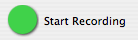
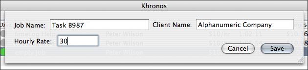

Khronos Support
Other Resources:
Getting Started with Khronos
About Khronos
Khronos is designed to:
- Log time spent on each job.
- Log time spent on each work session.
- Calculates the payment from client (hourly wage).
- Modify your work sessions.
- Real time feedback.
- Export and backup your data.
- Print Invoices
The Interface
Buttons:
View all the sesions for the selected job.
Add a new job or session.
Remove a job. Be careful, this cannot be undone.
Edit a job or session.
 Start recording a job session.
Stop recording a job session.
Pause an active job.
Start a paused job.

This is the Add Job dialog box. Enter data as shown.
Menu Bar Controller

This is the menu bar controller. The controller displays the total time and total charges of selected job. Select the job via the job selecting menu, as show in the image. You can also pause/resume and start/stop the selected job. Note: you must select a job, whether via the application or the menu bar, in order to control it via the menu bar.
Go to the Khronos Preferences to configure the menu bar controller. All items can be displayed or removed from the menu bar.
Keyboard Shortcuts, etc.
- Open Preferences: Apple ,
- Open Window: Apple W
- Save: Apple S
- Print Setup: Shift Apple P
- Print Invoice: Apple P
- Minimize Khronos: Apple M
- Hide Khronos: Apple H
- Donate: Apple D
- Help: Apple ?
- Close Edit/Add Menu: Apple Escape
Editing Sessions and Jobs
Here are the formats to use when editing Sessions or Jobs:
- Dates: 12/12/2004 is M/D/Y
- Times: 12:12:12 is H:M:S
- Times can be also entered as such: 12:12:12, 12:12, 12:1212 pm, 12:12 pm
- Rates: 12 is 12 units of currency per hour
Importing and Exporting Data
Exporting
Exporting takes the current data and exports it. It'll save the data as a .khd file. The file is tab delineated, so feel free to import it into MS Excel or a similar program.
Importing
For importing, select the .khd file you want to import. Khronos will import the data. Jobs of the same name and client will display twice in Khronos. The data will not be merged, so the session data will be different, but the job and client names will exist twice.
You can as well import data exported from version 1.0 or 1.1. Just go to import and select the folder.
It's best to import files that have been directly exported from Khronos and not changed in any way.
Known Issues
- Timer will continue during sleep. Make sure to "Stop Recording" before putting your computer to sleep.
- More improvements to come. Won't list them here since they're so sweet that we wouldn't want the competition to get a head start on us.
Donating
As you might know, Khronos is free. You don't have to give us anything. It's not cripple-ware. It won't stop working in 30 days.
How to Donate
However, if you have the itch to get us some beer money, then you can donate with paypal.
Why the Crap Would I Donate to You Guys?
Well...
- We put a lot of time into it.
- It works.
- You want us to have a beer on you.